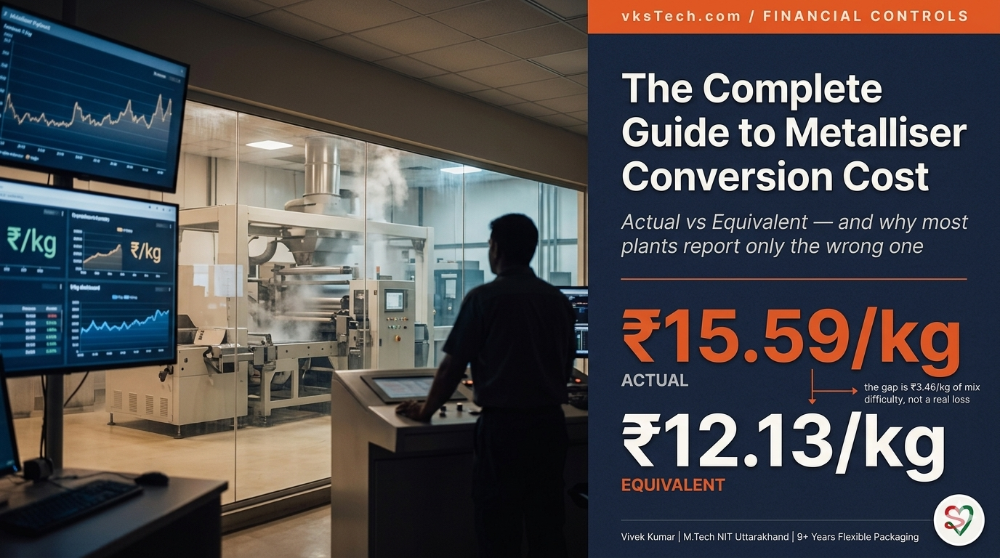
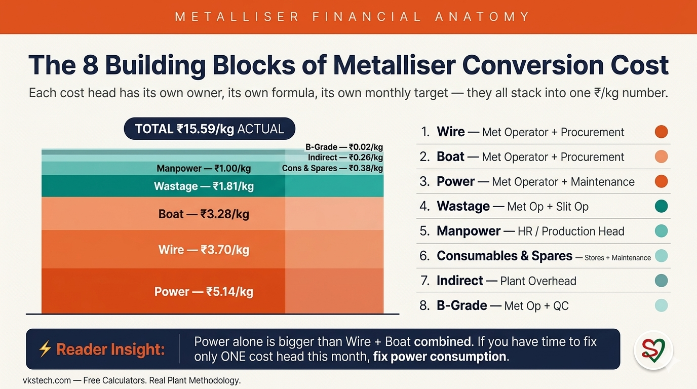
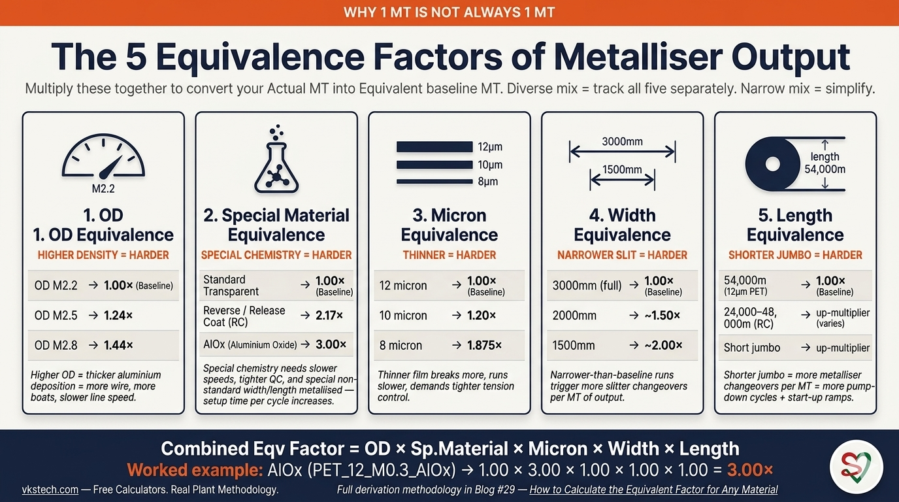
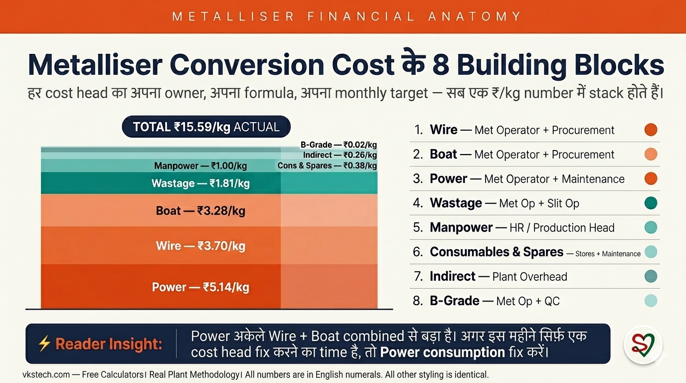
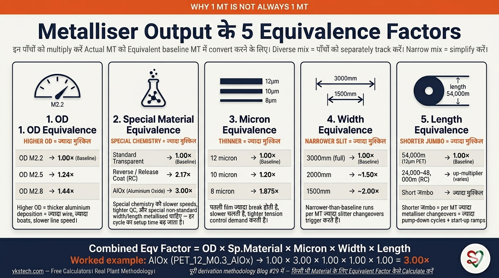

💰 The Complete Guide to Metalliser Conversion Cost — Actual vs Equivalent
📖 18-min read | Real Plant Methodology | Published January 2025 | Bookmark for monthly review
Every metalliser plant manager in India tracks one number obsessively: Conversion Cost in ₹/kg. It is the single number that decides whether the plant is making money or losing it, whether the team gets a bonus or a memo, whether next quarter's budget gets approved or cut. And yet — at most plants — that number is calculated in a way that quietly works against the team running it.
Not arithmetically wrong. The formula is right. The problem is more subtle and more expensive: most plants report only the Actual Conversion Cost, which compares this month's ₹/kg to last month's ₹/kg as if the product mix were the same. It almost never is. A month spent running easy products (12 micron PET at OD M2.2) will look like a hero month; a month spent running difficult products (8 micron PET, AlOx, OD M2.8) will look like a disaster — even if the team did the harder month better. If you have ever sat in a quarterly review where the numbers said one thing and your gut said another, this is why.
This blog walks you through every cost head that builds up the metalliser conversion cost, the difference between Actual and Equivalent, why the equivalent number protects you and your team, and a fully worked example using real January 2025 plant data. The numbers in this blog are real — pulled from a working metalliser plant — and you can plug your own numbers into the live calculator at the end. Eighteen minutes. After this you will walk into your next review with the right two numbers in hand, not just one.
What this blog covers vs what's in Blog #29: This blog covers what Equivalent Conversion Cost is, why it matters, and how to compute it once you have your equivalence factors. The actual derivation of those factors — how to calculate the OD, Material, Micron, Width, and Length equivalence factors for any material (PET, BOPP, CPP, Nylon, others) at your plant — is a whole topic on its own and is covered in Blog #29: How to Calculate the Equivalent Factor for Any Material (coming next). For this blog, we use the factors as given inputs from the engineering team and focus on what to do with them.
- Slit Output (Prime/A Grade Material): 663 MT actual / 990 MT equivalent (1.49× multiplier)
- Actual Conversion Cost: ₹15.59/kg
- Equivalent Conversion Cost: ₹12.13/kg — what same effort would cost on baseline product
- Target Conversion Cost: ₹10.84/kg (gap of ₹1.29/kg vs equivalent)
- Annual gap at 8000 MT: ₹1.03 crore between equivalent and target
- The illusion you avoid: reporting only Actual makes a high-difficulty month look 28% worse than it really was
🏗️ Cost Head #1 — The Eight Building Blocks of Conversion Cost
Conversion Cost is not one number. It is the sum of eight cost heads, each tracked separately, each with its own owner. Get this list memorised first; everything else in this blog refers back to it:

| # | Cost Head | Jan Actual ₹/kg | Jan Eqv ₹/kg | Target ₹/kg | Owner |
|---|---|---|---|---|---|
| 1 | Wire | 3.70 | 3.41 | 3.05 | Met operator + procurement |
| 2 | Boat | 3.28 | 2.40 | 1.87 | Met operator + procurement |
| Sub-total: Raw Material (Wire + Boat) | 6.98 | 5.81 | 4.92 | — | |
| 3 | Wastage Loss (Bare + Met Film) | 1.81 | 1.67 | 1.00 | Met op + Slit op |
| 4 | B-Grade Loss | 0.024 | 0.022 | 0.00 | Met op + QC |
| 5 | Manpower | 1.00 | 0.67 | 0.80 | HR / Production head |
| 6 | Power | 5.14 | 3.45 | 3.56 | Met op + Maintenance |
| 7 | Consumables & Spares | 0.38 | 0.26 | 0.30 | Stores + Maintenance |
| 8 | Indirect Expense | 0.26 | 0.26 | 0.26 | Plant overhead |
| Sub-total: Conversion (ex-RM) | 8.61 | 6.33 | 5.92 | — | |
| TOTAL Conversion Cost | 15.59 | 12.13 | 10.84 | — | |
| + | Packing & Freight | 1.67 | 1.67 | 1.67 | Logistics |
| − | Scrap Wire/Aluminium Sale | (0.55) | (0.55) | — | Stores |
| Final Cost with Packing & Scrap Sale | 16.71 | 13.26 | 12.51 | — | |
Three things to notice from this table before we go deeper:
- Power is the biggest single line — ₹5.14/kg actual, more than wire and boat combined. If you only had time to fix one cost head this month, fix power consumption.
- The Equivalent column is always lower than Actual when the plant ran a difficult mix. This is the whole point of equivalence — see the section below.
- Indirect Expense doesn't change between Actual and Equivalent because it's a fixed plant overhead allocated per kg. Everything else is variable.
📐 The Formula — How Conversion Cost is Built
Each cost head follows the same pattern: quantity consumed × rate ÷ output produced. Here are the four formulas you actually use most:
Manpower, Consumables, and Indirect Expense are typically fixed ₹/kg allocations — set at the start of the year by Finance, allocated equally across every kg produced. They do not vary with shift-by-shift performance, only with the absolute level of plant activity.
⚖️ Cost Head #2 — Why "Actual" Is the Wrong Number to Report Alone
Here is the core insight that this blog exists for. Actual Conversion Cost compares months as if every kilogram requires the same effort. In real plants, every kilogram does not require the same effort:
- A 12 micron film is faster to metallise than an 8 micron film (8μm needs more careful handling, slower speeds, higher rejection rate)
- An OD M2.2 product runs faster than an OD M2.8 product (higher OD = thicker aluminium deposition = needs more wire, more boats, slower line speed for proper coverage)
- An AlOx (Aluminium Oxide) product is a critical material — slow line speed, tighter QC, and special non-standard width and length metallised, which dramatically increases setup time per cycle. The combined penalty pushes its equivalence factor to 3.00×.
- A reverse-coated product takes ~2× the boats and special handling
Here is what happens in practice. Imagine your plant runs 30% AlOx + 25% 8 micron mix in January, and your peer plant down the road runs 90% standard 12 micron PET in the same month. Your Actual ₹/kg will be higher. Your peer's will be lower. The corporate review meeting will spend forty minutes asking why your plant's "cost discipline slipped" — and zero minutes recognising that your team just delivered a much harder product mix. Reporting only Actual punishes plants for running difficult orders. Over the next two quarters, your team quietly learns to push back on difficult orders. The salesforce stops bringing AlOx enquiries to your plant. Eventually you become the "easy products only" plant — and at that point you have lost competitive position permanently. The Actual-only number is what starts that drift.
The fix is Equivalent Conversion Cost: compute the cost as if every kg ran the baseline difficulty. The baseline at this plant is PET_12_M2.2 — 12 micron PET at OD M2.2, standard transparent metallised. Everything else is multiplied up to reflect the additional effort. With Equivalent reporting in place, the conversation in that review meeting changes from "why did your cost go up?" to "your equivalent cost is on track despite a 30% AlOx month — well done." That is the conversation you want to be having.
In January 2025, this plant produced 665 MT actual output. But because the mix was difficult (AlOx, thinner micron, higher OD), the equivalent output was 990 MT — a 1.49× multiplier. So the same total spend of ₹103.4 lakh divided by 665 MT = ₹15.59/kg actual, but divided by 990 MT = ₹12.13/kg equivalent. That ₹3.46 difference is not a saving — it is the true picture. Hide it and you will mis-judge every month.
🎯 Cost Head #3 — How Equivalent Output Is Built (the concept)
The whole game of Equivalent Conversion Cost rests on one question: what is one MT of difficult product worth, in baseline-MT terms? If your plant ran 1 MT of a difficult AlOx product this month and your competitor next door ran 1 MT of standard 12μm transparent, you both made "1 MT" — but the work is wildly different. The equivalence factor is the multiplier that converts your difficult MT into the equivalent baseline MT that the *same effort* would have produced.

Every metallisation plant works with five distinct equivalence factors, and they stack — you multiply them together to get the combined factor for any material code:
- OD Equivalence — based on Optical Density (the metallisation thickness/coverage value, M2.2 vs M2.5 vs M2.8). Higher OD means more wire/boat consumption + slower line speed for proper coverage.
- Special Material Equivalence — based on chemistry (Standard Transparent vs Reverse Coat vs AlOx vs others). Special chemistry needs slower speeds, tighter QC, and specialty handling.
- Micron Equivalence — based on film thickness (12μm baseline vs 10μm vs 8μm). Thinner film breaks more, runs slower, demands tighter tension control.
- Width Equivalence — based on slit width vs standard 3000mm. Narrower-than-baseline runs trigger more slitter changeovers per MT.
- Length Equivalence — based on jumbo length vs the standard 54,000m for 12μm PET. Shorter jumbo = more metalliser changeovers per MT = more pump-down cycles, more start-up ramps, more lost cycle time.
For example, an AlOx product picks up its 3.00× factor through Special Material Equivalence — the combination of slow line speed, special non-standard width/length metallised, and increased setup time per cycle. A Reverse/Release Coat (RC) product picks up 2.17× through the same Special Material route, including its shorter jumbo length (typically 24,000–48,000m vs the standard 54,000m). An 8 micron PET picks up 1.875× Micron Equivalence because the line speed is roughly 88% slower. An OD M2.8 product picks up 1.44× OD Equivalence because thicker deposition takes longer.
These numbers are not theoretical. They are calibrated against real per-day MT output for each material code at a working plant. The exact derivation — how to arrive at 1.24×, 1.875×, 3.00×, 2.17× and how to do the same calculation for any new material your plant takes on (whether PET, BOPP, CPP, Nylon, or anything else) — is a topic with enough depth to deserve its own blog.
📅 Coming Next — Blog #29
How to Calculate the Equivalent Factor for Any Material — the deep dive on derivation. We will walk through where 1.24×, 1.875×, 3.00×, 2.17× actually come from based on real plant run-rate data, and you will learn how to derive your own factors for any new material your plant takes on. PET, BOPP, CPP, Nylon — the methodology is the same.
For this blog, we accept these factors as given inputs from the engineering team and focus on how to use them in monthly reviews and budget conversations.
For the worked example below, here are the seven material codes that the reference plant ran in January 2025, with their combined equivalence factors as inputs:
| Material Code | Material Type | Combined Eqv Factor | Daily Output (MT/day) |
|---|---|---|---|
| PET_12_M2.2 | Standard 12μm, OD M2.2 (baseline) | 1.00× | 36 |
| PET_12_M2.5 | Standard 12μm, OD M2.5 | 1.24× | 29 |
| PET_12_M2.8 | Standard 12μm, OD M2.8 | 1.44× | 25 |
| PET_10_M2.2 | Standard 10μm, OD M2.2 | 1.20× | 30 |
| PET_8_M2.2 | Standard 8μm, OD M2.2 | 1.875× | 19 |
| PET_12_M0.3_AlOx | AlOx 12μm — critical (special width/length, slow speed) | 3.00× | 12 |
| PET_12_M2.2_RC | Reverse/Release Coat 12μm (special chemistry, jumbo 24,000–48,000m) | 2.17× | 16 |
Notice the relationship: as the combined factor goes up, the actual MT/day output goes down — exactly because difficult products take more time per MT. AlOx runs at 12 MT/day vs the baseline 36 MT/day, which is a 3× drop, matching its 3.00× factor. The numbers self-reconcile against measured run rates.
Read the table as: 1 MT of PET_8_M2.2 counts as 1.875 MT of baseline equivalent production. 1 MT of PET_12_M0.3_AlOx (AlOx) counts as 3.00 MT. Your plant did the work of 1.875 or 3.00 MT — it should not be judged on the 1 MT actual.
📊 Worked Example — January 2025 Plant Reconciliation
Now we put everything together. Below is the full conversion cost reconciliation for the reference plant in January 2025 — start with raw consumption numbers, end with three numbers (Actual, Equivalent, Target) that you can defend in any review. The math is straightforward; the value is in the side-by-side comparison.
Step 1 — Outputs:
- Slit Output (Prime/A Grade Material): 665 MT actual
- Equivalent Output: 990 MT (= 665 × 1.49 multiplier from product mix)
Step 2 — Wire & Boat (₹333.40/kg wire effective, ₹1,180/pc boat effective):
Boat: 1,850 pcs consumed = 2.78 pcs/MT actual = 1.87 pcs/MT equivalent
Wire ₹/kg actual: 3.70 | Equivalent: 3.41 | Target: 3.05
Boat ₹/kg actual: 3.28 | Equivalent: 2.40 | Target: 1.87
Step 3 — Power (414,119 units consumed @ ₹8.25/unit):
Power ₹/kg equivalent = 5.14 ÷ 1.49 multiplier = ₹3.45/kg
Step 4 — Wastage (1.81% slitter waste @ ₹100/kg base film rate):
Wastage ₹/kg equivalent = ₹1.67/kg
Step 5 — Fixed allocations (Manpower, C&S, Indirect):
Consumables & Spares: ₹0.38/kg actual / ₹0.26/kg equivalent
Indirect: ₹0.26/kg (same for both)
Step 6 — Sum it all up:
Equivalent Conv Cost = 3.41 + 2.40 + 3.45 + 1.67 + 0.022 + 0.67 + 0.26 + 0.26 = ₹12.13/kg
Target Conv Cost = ₹10.84/kg → gap to close: ₹1.29/kg
The story this tells: the January team performed at ₹12.13/kg equivalent, ₹1.29/kg above target. Not great, but not a disaster either. If you walked into a review reporting only the Actual ₹15.59/kg, the gap would look like ₹4.75/kg — and management would likely launch an emergency cost-reduction project that might not be needed. The Equivalent number tells you something more useful: the real gap is in power, wire, and boat — power is ₹3.45 vs target ₹3.56 (actually below target!), wire is ₹3.41 vs ₹3.05, boat is ₹2.40 vs ₹1.87. That is a focused improvement plan you can build a quarter around. The Actual-only number would have sent you and your team chasing the wrong things for three months.
This is a level-headed conclusion: focus the next month on wire and boat consumption per equivalent MT, not on a panicked plant-wide cost cut.
🚨 Three Mistakes Plant Managers Make With Conversion Cost
Mistake 1 — Reporting only Actual. Without Equivalent, every difficult-mix month looks like a failure and every easy-mix month looks like a triumph. Eventually your team chases easy product mix instead of doing difficult work better. Salesforce loses the freedom to take valuable difficult orders. Fix: always report Actual and Equivalent side by side. The gap between them tells you about product mix; the gap between Equivalent and Target tells you about plant performance.
Mistake 2 — Using stale equivalence factors. The factors (1.24×, 1.44×, 1.875×, 3.00×, 2.17×) are calibrated to the plant's actual run rates, jumbo lengths, and material recipes. If the plant retrofits a faster source bar, switches to a thinner-film recipe, or starts running BOPP/CPP/Nylon alongside PET, the factors shift. Fix: review the factors annually. Compare actual MT/day per material code over the past year vs the factor you're using. Adjust if the gap is more than 10%. The full derivation methodology — the one you will use to recalibrate or to derive a factor for a new material — is in Blog #29.
Mistake 3 — Treating Equivalent as the "soft" number. Some Finance heads dismiss Equivalent as "an excuse for poor performance." This is exactly backwards. Equivalent is the harder number to game — you can't make Equivalent look better by pushing the salesforce to take only easy orders, because the easy orders themselves carry a 1.00× factor and won't help your equivalent denominator. Fix: change the conversation in your next review by leading with both numbers in this order — "Equivalent is ₹12.13/kg, on track. Actual is ₹15.59/kg, reflecting the AlOx/8μm mix we ran." If your finance team pushes back, ask them this: "Would you prefer the plant team to refuse AlOx orders next quarter so the Actual looks better?" The answer is always no, which proves Equivalent is the right number to manage against.
💰 Live Calculator — Compute Your Plant's Conversion Cost
Edit any input below. The calculator runs the full Actual + Equivalent + Target comparison live. Default values are the January 2025 reference plant data.
How to use: In the Production Mix table, add one row for each material type your plant ran this period. Enter its name, the actual quantity in MT, and its Equivalence Factor. The calculator sums up Actual MT and Equivalent MT, then runs the full Conversion Cost comparison. Don't know your factors? Blog #29 (coming next) explains how to derive them for any material.
Calculator note: This calculator uses the simplified model — Equivalent ₹/kg = Actual ÷ Multiplier (except Indirect, which stays fixed). Real plant Excel models often use a hybrid baseline + over-target formula per cost head, which can shift individual line values by ±₹0.5/kg. The total equivalent number is directionally correct and good enough for first-pass plant analysis.
| Material Name / Code | Qty (MT) | Eqv Factor | Eqv MT | |
|---|---|---|---|---|
| TOTAL | — MT | —× | — MT |
🧮 More Free Calculators on vksTech.com
This is one of seven free calculators on vksTech.com — alongside Film Roll Weight, Roll OD, GSM ↔ Micron Conversion, Production Yield %, Machine Utilisation %, and Cost per Square Metre. All free, no email gate, no subscription.
🎯 Where to Start at Your Plant
If you read this blog and want to introduce the Actual + Equivalent reporting at your plant, this is the 6-week rollout that works:
- Week 1 — Map your material codes. List every material code your plant produces. Tag each with its OD, micron, material type, jumbo length, and slit width. If you run mixed films (PET + BOPP + CPP + Nylon), do this for each film type — the equivalence framework is the same; only the baseline shifts.
- Week 2 — Calibrate the equivalence factors. Use the table in this blog as a starting point, but compare against your plant's last 12 months of MT/day per material. Adjust within ±20% if needed. For the full derivation methodology — including how to handle BOPP/CPP/Nylon and any new material codes — see Blog #29: How to Calculate the Equivalent Factor for Any Material.
- Week 3 — Build the monthly conversion cost format. One row per cost head, three columns (Actual / Equivalent / Target). Owner, formula, and source data column.
- Week 4 — First run on last month's data. Compute Equivalent retroactively for the past month. Discuss the gap with the production team — they should recognise their effort in the Equivalent number. This is the moment when the team realises that someone is finally measuring what they actually do.
- Week 5-6 — Roll into monthly review. Add Equivalent to the standard plant performance dashboard. Replace "actual vs target" with "actual vs equivalent vs target." The conversation will change immediately. So will the willingness of the salesforce to bring difficult orders to your plant.
This conversion cost framework is the financial counterpart to the operational improvements covered earlier in the series:
- Blog #22: Boat-Set SMED — 2017 case study (drives Boat consumption down)
- Blog #23: Inter-Cycle SMED — 2016 case study (drives Power and Boat consumption down)
- Blog #24: Metallised Waste 1.8% → 0.9% (drives Wastage Loss head down)
- Blog #25: 2 SMED Levers Hub — strategic overview
- Blog #26: Bare Film Waste 2% → 1% (drives Wastage Loss head down)
- This blog (#28): Conversion Cost — Actual vs Equivalent (you are here)
- Blog #29 (coming next): How to Calculate the Equivalent Factor for Any Material — the deep dive into where 1.24×, 1.875×, 3.00× actually come from, and how to derive them for any new material at your plant
💰 Metalliser Conversion Cost की पूरी Guide — Actual vs Equivalent
📖 18-min read | Real Plant Methodology | January 2025 में published | Monthly review के लिए bookmark करें
India के हर metalliser plant manager एक number obsessively track करते हैं: Conversion Cost ₹/kg में। ये वो single number है जो decide करता है कि plant पैसा कमा रहा है या गँवा रहा है, team को bonus मिलेगा या memo, अगले quarter का budget approve होगा या cut। और फिर भी — ज़्यादातर plants पर — वो number ऐसे calculate होता है जो चुपचाप उसी team के against काम करता है जो plant चलाती है।
Arithmetically ग़लत नहीं। Formula सही है। Problem ज़्यादा subtle और ज़्यादा expensive है: ज़्यादातर plants सिर्फ़ Actual Conversion Cost report करते हैं, जो इस महीने के ₹/kg को पिछले महीने के ₹/kg से ऐसे compare करता है जैसे product mix same हो। लगभग कभी नहीं होता। आसान products (12 micron PET at OD M2.2) चलाने वाला महीना hero महीना दिखेगा; मुश्किल products (8 micron PET, AlOx, OD M2.8) चलाने वाला महीना disaster दिखेगा — चाहे team ने मुश्किल महीना बेहतर ही किया हो। अगर आप कभी ऐसी quarterly review में बैठे हैं जहाँ numbers कुछ कहते थे और आपका gut कुछ और — यही reason है।
ये blog आपको हर cost head जो metalliser conversion cost बनाता है, Actual और Equivalent का difference, क्यों equivalent number आपकी और आपकी team की protect करता है, और real January 2025 plant data के साथ fully worked example से walk through करेगा। इस blog के numbers real हैं — एक working metalliser plant से pulled — और आप अपने numbers को end पर live calculator में plug कर सकते हैं। अठारह minutes। इसके बाद आप अगली review में सही दो numbers लेकर जाएँगे, सिर्फ़ एक नहीं।
ये blog क्या cover करता है vs Blog #29 में क्या है: ये blog cover करता है कि Equivalent Conversion Cost क्या है, क्यों matter करता है, और एक बार equivalence factors मिल जाएँ तो उसे कैसे compute करें। उन factors का actual derivation — किसी भी material (PET, BOPP, CPP, Nylon, others) के लिए OD, Material, Micron, Width, और Length equivalence factors कैसे calculate करें — एक अलग पूरा topic है और Blog #29: किसी भी Material के लिए Equivalent Factor कैसे Calculate करें (आगे आ रहा है) में cover होता है। इस blog के लिए, हम engineering team से इन factors को given inputs मानते हैं और focus करते हैं उन्हें use कैसे करें।
- Slit Output (Prime/A Grade Material): 663 MT actual / 990 MT equivalent (1.49× multiplier)
- Actual Conversion Cost: ₹15.59/kg
- Equivalent Conversion Cost: ₹12.13/kg — same effort baseline product पर क्या cost करता
- Target Conversion Cost: ₹10.84/kg (equivalent vs target gap ₹1.29/kg)
- 8000 MT पर annual gap: equivalent और target के बीच ₹1.03 करोड़
- जो illusion आप avoid करते हैं: सिर्फ़ Actual report करना high-difficulty महीने को 28% worse दिखाता है
🏗️ Cost Head #1 — Conversion Cost के आठ Building Blocks
Conversion Cost एक number नहीं है। ये आठ cost heads का sum है, हर एक separately tracked, हर एक का अपना owner। पहले इस list को memorise करें; इस blog का बाक़ी सब इसी पर refer करता है:

| # | Cost Head | Jan Actual ₹/kg | Jan Eqv ₹/kg | Target ₹/kg | Owner |
|---|---|---|---|---|---|
| 1 | Wire | 3.70 | 3.41 | 3.05 | Met operator + procurement |
| 2 | Boat | 3.28 | 2.40 | 1.87 | Met operator + procurement |
| Sub-total: Raw Material (Wire + Boat) | 6.98 | 5.81 | 4.92 | — | |
| 3 | Wastage Loss (Bare + Met Film) | 1.81 | 1.67 | 1.00 | Met op + Slit op |
| 4 | B-Grade Loss | 0.024 | 0.022 | 0.00 | Met op + QC |
| 5 | Manpower | 1.00 | 0.67 | 0.80 | HR / Production head |
| 6 | Power | 5.14 | 3.45 | 3.56 | Met op + Maintenance |
| 7 | Consumables & Spares | 0.38 | 0.26 | 0.30 | Stores + Maintenance |
| 8 | Indirect Expense | 0.26 | 0.26 | 0.26 | Plant overhead |
| Sub-total: Conversion (ex-RM) | 8.61 | 6.33 | 5.92 | — | |
| TOTAL Conversion Cost | 15.59 | 12.13 | 10.84 | — | |
| + | Packing & Freight | 1.67 | 1.67 | 1.67 | Logistics |
| − | Scrap Wire/Aluminium Sale | (0.55) | (0.55) | — | Stores |
| Final Cost with Packing & Scrap Sale | 16.71 | 13.26 | 12.51 | — | |
Deeper जाने से पहले इस table से तीन चीज़ें notice करें:
- Power सबसे बड़ी single line है — ₹5.14/kg actual, wire और boat combined से भी ज़्यादा। अगर इस महीने सिर्फ़ एक cost head fix करने का time है, power consumption fix करें।
- Equivalent column हमेशा Actual से कम है जब plant ने मुश्किल mix चलाया हो। यही equivalence का पूरा point है — नीचे का section देखें।
- Indirect Expense Actual और Equivalent में नहीं बदलता क्योंकि ये fixed plant overhead है per kg allocate होता है। बाक़ी सब variable है।
📐 Formula — Conversion Cost कैसे बनता है
हर cost head same pattern follow करता है: quantity consumed × rate ÷ output produced। यहाँ चार formulas हैं जो आप actually सबसे ज़्यादा use करते हैं:
Manpower, Consumables, और Indirect Expense typically fixed ₹/kg allocations होते हैं — साल की शुरुआत में Finance set करता है, हर produced kg पर equally allocate। ये shift-by-shift performance के साथ vary नहीं करते, सिर्फ़ plant activity के absolute level के साथ।
⚖️ Cost Head #2 — "Actual" अकेला report करना ग़लत क्यों है
यहाँ है core insight जिसके लिए ये blog है। Actual Conversion Cost महीनों को ऐसे compare करता है जैसे हर kilogram same effort require करता हो। Real plants में, हर kilogram same effort require नहीं करता:
- 12 micron film 8 micron film से faster metallise होती है (8μm को ज़्यादा careful handling, slower speeds, higher rejection rate चाहिए)
- OD M2.2 product OD M2.8 product से faster चलता है (higher OD = thicker aluminium deposition = ज़्यादा wire, ज़्यादा boats, proper coverage के लिए slower line speed)
- AlOx (Aluminium Oxide) एक critical material है — slow line speed, tighter QC, और special non-standard width और length metallised होती है, जो हर cycle पर setup time को बहुत बढ़ा देती है। Combined penalty equivalence factor को 3.00× तक push करती है।
- Reverse-coated product ~2× boats और special handling लेता है
Practice में क्या होता है इसको imagine करें। मान लीजिए आपका plant January में 30% AlOx + 25% 8 micron mix चलाता है, और road पर आगे का peer plant उसी महीने 90% standard 12 micron PET चलाता है। आपकी Actual ₹/kg ज़्यादा होगी। आपके peer की कम। Corporate review meeting चालीस minutes पूछेगी कि आपके plant की "cost discipline क्यों फिसली" — और zero minute recognise करेगी कि आपकी team ने बहुत harder product mix deliver किया। सिर्फ़ Actual report करना plants को difficult orders चलाने पर punish करता है। अगले दो quarters में, आपकी team चुपचाप सीख जाती है कि difficult orders पर push back करो। Salesforce आपके plant पर AlOx enquiries लाना बंद कर देती है। आख़िर में आप "easy products only" plant बन जाते हैं — और उस point पर आपने competitive position permanently खो दी। Actual-only number ही ये drift शुरू करता है।
Fix है Equivalent Conversion Cost: cost ऐसे compute करें जैसे हर kg baseline difficulty चला हो। इस plant पर baseline है PET_12_M2.2 — 12 micron PET at OD M2.2, standard transparent metallised। बाक़ी सब additional effort reflect करने के लिए multiplied up होता है। Equivalent reporting in place हो जाए, तो उस review meeting का conversation "आपका cost क्यों बढ़ा?" से बदलकर "30% AlOx महीने के बावजूद आपका equivalent cost on track है — well done" हो जाता है। यही conversation आप चाहते हैं।
January 2025 में, इस plant ने 665 MT actual output produce किया। पर mix मुश्किल था (AlOx, thinner micron, higher OD), इसलिए equivalent output था 990 MT — एक 1.49× multiplier। तो same total spend ₹103.4 lakh ÷ 665 MT = ₹15.59/kg actual, पर ÷ 990 MT = ₹12.13/kg equivalent। वो ₹3.46 का difference saving नहीं है — वो true picture है। उसे hide करें और आप हर महीना mis-judge करेंगे।
🎯 Cost Head #3 — Equivalent Output कैसे बनता है (concept)
Equivalent Conversion Cost का पूरा खेल एक question पर टिका है: 1 MT difficult product baseline-MT में कितने का है? अगर आपके plant ने इस महीने 1 MT AlOx चलाया और बगल वाले plant ने 1 MT standard 12μm transparent — दोनों ने "1 MT" बनाया, पर मेहनत बहुत अलग है। Equivalence factor वो multiplier है जो आपके difficult MT को उस equivalent baseline MT में convert करता है जो *same effort* में बनता।

हर metallisation plant पर पाँच distinct equivalence factors होते हैं, और ये stack होते हैं — किसी material code के लिए combined factor निकालने के लिए इन्हें multiply करते हैं:
- OD Equivalence — Optical Density पर based (metallisation की thickness/coverage value, M2.2 vs M2.5 vs M2.8)। Higher OD = ज़्यादा wire/boat consumption + proper coverage के लिए slower line speed।
- Special Material Equivalence — chemistry पर based (Standard Transparent vs Reverse Coat vs AlOx vs others)। Special chemistry के लिए slower speeds, tighter QC, और specialty handling चाहिए।
- Micron Equivalence — film thickness पर based (12μm baseline vs 10μm vs 8μm)। पतली film ज़्यादा break होती है, slower चलती है, tighter tension control demand करती है।
- Width Equivalence — slit width vs standard 3000mm पर based। Narrower-than-baseline runs per MT ज़्यादा slitter changeovers trigger करते हैं।
- Length Equivalence — जumbo length vs 12μm PET के standard 54,000m पर based। Shorter जumbo = per MT ज़्यादा metalliser changeovers = ज़्यादा pump-down cycles, ज़्यादा start-up ramps, ज़्यादा lost cycle time।
उदाहरण के तौर पर, AlOx product अपना 3.00× factor Special Material Equivalence के through pick करता है — slow line speed, special non-standard width/length metallised, और हर cycle पर बढ़ा हुआ setup time का combination। Reverse/Release Coat (RC) product 2.17× same Special Material route से pick करता है, जिसमें इसकी shorter जumbo length (typically 24,000–48,000m vs standard 54,000m) भी included है। 8 micron PET 1.875× Micron Equivalence pick करता है क्योंकि line speed roughly 88% slower है। OD M2.8 product 1.44× OD Equivalence pick करता है क्योंकि thicker deposition में ज़्यादा time लगता है।
ये numbers theoretical नहीं हैं। ये एक working plant पर हर material code के real per-day MT output के against calibrated हैं। Exact derivation — 1.24×, 1.875×, 3.00×, 2.17× कहाँ से आते हैं और किसी नए material के लिए (PET, BOPP, CPP, Nylon, या कुछ भी) कैसे same calculation करें — एक ऐसा topic है जिसकी अपनी blog deserve है।
📅 Coming Next — Blog #29
किसी भी Material के लिए Equivalent Factor कैसे Calculate करें — derivation का deep dive। हम walk through करेंगे कि 1.24×, 1.875×, 3.00×, 2.17× actually real plant run-rate data के basis पर कहाँ से आते हैं, और आप सीखेंगे कि अपने plant पर किसी भी नए material के लिए अपने factors कैसे derive करें। PET, BOPP, CPP, Nylon — methodology वही है।
इस blog के लिए, हम engineering team से इन factors को given inputs मानते हैं और focus करते हैं कि इन्हें monthly reviews और budget conversations में कैसे use करें।
नीचे worked example के लिए, यहाँ January 2025 में reference plant के सात material codes हैं, उनके combined equivalence factors with inputs:
| Material Code | Material Type | Combined Eqv Factor | Daily Output (MT/day) |
|---|---|---|---|
| PET_12_M2.2 | Standard 12μm, OD M2.2 (baseline) | 1.00× | 36 |
| PET_12_M2.5 | Standard 12μm, OD M2.5 | 1.24× | 29 |
| PET_12_M2.8 | Standard 12μm, OD M2.8 | 1.44× | 25 |
| PET_10_M2.2 | Standard 10μm, OD M2.2 | 1.20× | 30 |
| PET_8_M2.2 | Standard 8μm, OD M2.2 | 1.875× | 19 |
| PET_12_M0.3_AlOx | AlOx 12μm — critical (special width/length, slow speed) | 3.00× | 12 |
| PET_12_M2.2_RC | Reverse/Release Coat 12μm (special chemistry, jumbo 24,000–48,000m) | 2.17× | 16 |
Relationship notice करें: जैसे combined factor बढ़ता है, actual MT/day output घटता है — exactly इसलिए क्योंकि difficult products को per MT ज़्यादा time लगता है। AlOx 12 MT/day पर चलता है vs baseline 36 MT/day, यानी 3× drop, उसके 3.00× factor से match करता है। Numbers measured run rates के against self-reconcile करते हैं।
Table को ऐसे पढ़ें: 1 MT PET_8_M2.2 = 1.875 MT baseline equivalent production। 1 MT PET_12_M0.3_AlOx (AlOx) = 3.00 MT। आपके plant ने 1.875 या 3.00 MT का काम किया — 1 MT actual पर judge नहीं होना चाहिए।
📊 Worked Example — January 2025 Plant Reconciliation
अब सब कुछ साथ रखते हैं। नीचे January 2025 में reference plant के लिए full conversion cost reconciliation है — raw consumption numbers से शुरू, तीन numbers (Actual, Equivalent, Target) पर end जो आप किसी भी review में defend कर सकें। Math straightforward है; value side-by-side comparison में है।
Step 1 — Outputs:
- Slit Output (Prime/A Grade Material): 665 MT actual
- Equivalent Output: 990 MT (= 665 × 1.49 multiplier product mix से)
Step 2 — Wire & Boat (₹333.40/kg wire effective, ₹1,180/pc boat effective):
Boat: 1,850 pcs consumed = 2.78 pcs/MT actual = 1.87 pcs/MT equivalent
Wire ₹/kg actual: 3.70 | Equivalent: 3.41 | Target: 3.05
Boat ₹/kg actual: 3.28 | Equivalent: 2.40 | Target: 1.87
Step 3 — Power (414,119 units consumed @ ₹8.25/unit):
Power ₹/kg equivalent = 5.14 ÷ 1.49 multiplier = ₹3.45/kg
Step 4 — Wastage (1.81% slitter waste @ ₹100/kg base film rate):
Wastage ₹/kg equivalent = ₹1.67/kg
Step 5 — Fixed allocations (Manpower, C&S, Indirect):
Consumables & Spares: ₹0.38/kg actual / ₹0.26/kg equivalent
Indirect: ₹0.26/kg (दोनों के लिए same)
Step 6 — सब Sum करें:
Equivalent Conv Cost = 3.41 + 2.40 + 3.45 + 1.67 + 0.022 + 0.67 + 0.26 + 0.26 = ₹12.13/kg
Target Conv Cost = ₹10.84/kg → gap to close: ₹1.29/kg
ये story बताती है: January team ने ₹12.13/kg equivalent पर perform किया, target से ₹1.29/kg ऊपर। Great नहीं, पर disaster भी नहीं। अगर आप review में सिर्फ़ Actual ₹15.59/kg report करते, gap ₹4.75/kg दिखता — और management likely emergency cost-reduction project launch कर देता जो शायद ज़रूरी न हो। Equivalent number आपको कुछ ज़्यादा useful बताता है: real gap है power, wire, और boat में — power ₹3.45 vs target ₹3.56 (actually target से नीचे!), wire ₹3.41 vs ₹3.05, boat ₹2.40 vs ₹1.87। यही focused improvement plan है जिसके around आप पूरा quarter build कर सकते हैं। Actual-only number आपको और आपकी team को तीन महीने ग़लत चीज़ों के पीछे भगा देता।
ये level-headed conclusion है: अगले महीने का focus wire और boat consumption per equivalent MT पर रखें, panicked plant-wide cost cut पर नहीं।
🚨 Plant Managers की Conversion Cost के साथ 3 Mistakes
Mistake 1 — सिर्फ़ Actual report करना। Equivalent के बिना, हर difficult-mix month failure जैसा दिखता है और हर easy-mix month triumph जैसा। आख़िर में आपकी team मुश्किल काम बेहतर करने की जगह easy product mix chase करना शुरू कर देती है। Salesforce valuable difficult orders लेने की freedom खो देती है। Fix: हमेशा Actual और Equivalent side by side report करें। उनके बीच का gap product mix के बारे में बताता है; Equivalent और Target के बीच का gap plant performance के बारे में बताता है।
Mistake 2 — Stale equivalence factors use करना। Factors (1.24×, 1.44×, 1.875×, 3.00×, 2.17×) plant के actual run rates, jumbo lengths, और material recipes पर calibrated हैं। अगर plant faster source bar retrofit करता है, thinner-film recipe पर switch करता है, या PET के साथ BOPP/CPP/Nylon चलाना शुरू करता है — factors shift हो जाते हैं। Fix: factors को annually review करें। पिछले साल हर material code पर actual MT/day vs आप जो factor use कर रहे हैं, compare करें। 10% से ज़्यादा gap हो तो adjust करें। पूरी derivation methodology — जो आप recalibrate करने के लिए या नए material के लिए factor derive करने के लिए use करेंगे — Blog #29 में है।
Mistake 3 — Equivalent को "soft" number मानना। कुछ Finance heads Equivalent को "poor performance का excuse" समझकर dismiss करते हैं। ये exactly backwards है। Equivalent को game करना ज़्यादा मुश्किल है — आप salesforce पर सिर्फ़ easy orders लेने का pressure डालकर Equivalent को better नहीं बना सकते, क्योंकि easy orders का खुद का factor 1.00× है और वो आपके equivalent denominator में help नहीं करते। Fix: अगली review में conversation बदलें — दोनों numbers इसी order में lead करें: "Equivalent ₹12.13/kg है, on track। Actual ₹15.59/kg है, जो हमने जो AlOx/8μm mix चलाया उसे reflect करता है।" अगर finance team push back करे, ये पूछें: "क्या आप चाहेंगे कि plant team अगले quarter AlOx orders refuse करे ताकि Actual better दिखे?" Answer हमेशा no होगा, यही prove करता है कि Equivalent ही right number है manage करने के लिए।
💰 Live Calculator — अपने Plant की Conversion Cost Compute करें
नीचे कोई भी input edit करें। Calculator full Actual + Equivalent + Target comparison live चलाता है। Default values January 2025 reference plant data हैं।
कैसे use करें: Production Mix table में, हर material type के लिए जो आपका plant इस period में चलाया है एक row add करें। उसका name, MT में actual quantity, और Equivalence Factor डालें। Calculator Actual MT और Equivalent MT sum करता है, फिर full Conversion Cost comparison run करता है। Factors नहीं पता? Blog #29 (आगे आ रहा है) explain करता है किसी भी material के लिए कैसे derive करें।
Calculator note: ये calculator simplified model use करता है — Equivalent ₹/kg = Actual ÷ Multiplier (Indirect को छोड़कर, जो fixed रहता है)। Real plant Excel models अक्सर per cost head hybrid baseline + over-target formula use करते हैं, जो individual line values को ±₹0.5/kg shift कर सकता है। Total equivalent number directionally correct है और first-pass plant analysis के लिए काफ़ी अच्छा है।
| Material Name / Code | Qty (MT) | Eqv Factor | Eqv MT | |
|---|---|---|---|---|
| TOTAL | — MT | —× | — MT |
🧮 vksTech.com पर और Free Calculators
ये vksTech.com पर सात free calculators में से एक है — Film Roll Weight, Roll OD, GSM ↔ Micron Conversion, Production Yield %, Machine Utilisation %, और Cost per Square Metre के साथ। सब free, कोई email gate नहीं, कोई subscription नहीं।
🎯 अपने Plant पर कहाँ से शुरू करें
अगर आप ये blog पढ़कर अपने plant पर Actual + Equivalent reporting introduce करना चाहते हैं, ये 6-week rollout काम करता है:
- Week 1 — Material codes map करें। हर material code list करें जो आपका plant produce करता है। हर एक को OD, micron, material type, jumbo length, और slit width के साथ tag करें। अगर आप mixed films (PET + BOPP + CPP + Nylon) चलाते हैं, तो हर film type के लिए ये करें — equivalence framework वही है; सिर्फ़ baseline shift होता है।
- Week 2 — Equivalence factors calibrate करें। इस blog के table को starting point use करें, पर अपने plant के पिछले 12 महीनों के MT/day per material के against compare करें। ज़रूरत हो तो ±20% में adjust करें। पूरी derivation methodology — including BOPP/CPP/Nylon और किसी भी नए material code को कैसे handle करें — के लिए Blog #29: किसी भी Material के लिए Equivalent Factor कैसे Calculate करें देखें।
- Week 3 — Monthly conversion cost format build करें। हर cost head के लिए एक row, तीन columns (Actual / Equivalent / Target)। Owner, formula, और source data column।
- Week 4 — पिछले महीने के data पर पहला run। पिछले महीने के लिए Equivalent retroactively compute करें। Production team के साथ gap discuss करें — उन्हें Equivalent number में अपनी effort recognize होनी चाहिए। यही वो moment है जब team realize करती है कि finally कोई measure कर रहा है जो वो actually करते हैं।
- Week 5-6 — Monthly review में roll करें। Standard plant performance dashboard में Equivalent add करें। "Actual vs target" को "actual vs equivalent vs target" से replace करें। Conversation immediately बदलेगी। Salesforce की willingness भी बदलेगी difficult orders आपके plant पर लाने की।
ये conversion cost framework series में पहले cover हुए operational improvements का financial counterpart है:
- Blog #22: Boat-Set SMED — 2017 case study (Boat consumption नीचे drives करता है)
- Blog #23: Inter-Cycle SMED — 2016 case study (Power और Boat consumption नीचे drives करता है)
- Blog #24: Metallised Waste 1.8% → 0.9% (Wastage Loss head नीचे drives करता है)
- Blog #25: 2 SMED Levers Hub — strategic overview
- Blog #26: Bare Film Waste 2% → 1% (Wastage Loss head नीचे drives करता है)
- ये blog (#28): Conversion Cost — Actual vs Equivalent (आप यहाँ हैं)
- Blog #29 (आगे आ रहा है): किसी भी Material के लिए Equivalent Factor कैसे Calculate करें — 1.24×, 1.875×, 3.00× actually कहाँ से आते हैं इसका deep dive, और अपने plant पर किसी नए material के लिए कैसे derive करें